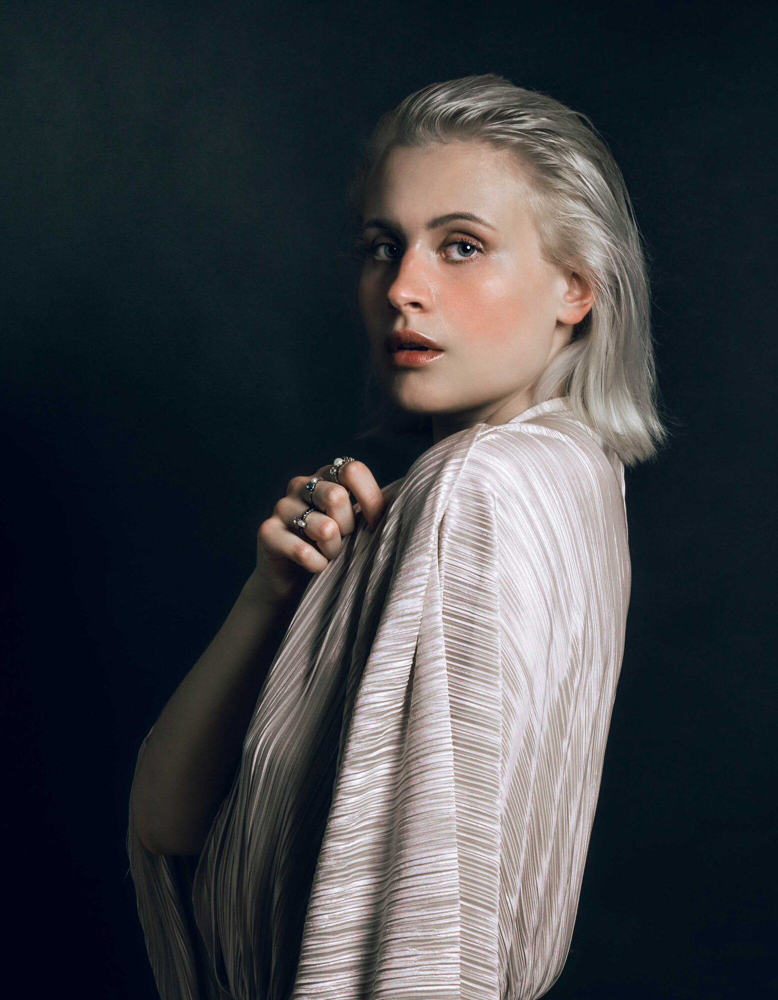
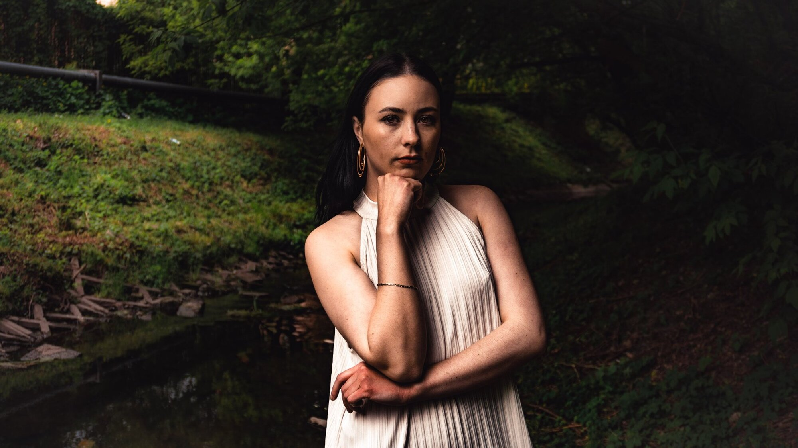

Za kulisami koncertu — jak pracuję w ruchu
Trzy godziny, zero dubli i światło, które zmienia się co takt. O warsztacie fotografa koncertowego.
Czytaj dalej01 // Aktualności
Kulisy sesji, ogłoszenia o nowych terminach i to, czego nauczyłem się przy okazji ostatnich zleceń. Bez marketingowego sztafażu — po prostu notatki z pracy.

Najnowszy wpis · Studio · 12 stycznia 2026 Sezon 2026 — terminy już otwarte Kalendarz na nowy sezon jest otwarty. Kilka słów o tym, czego można się spodziewać i jak dziś wygląda proces rezerwacji sesji. Czytaj cały wpis
Trzy godziny, zero dubli i światło, które zmienia się co takt. O warsztacie fotografa koncertowego.
Czytaj dalej
Bez lamp, bez softboxów — tylko okno, godzina dnia i uważność. Zasady, których trzymam się w każdej sesji.
Czytaj dalej
Bez briefu, bez klienta, bez terminu. O projekcie osobistym powstającym po godzinach.
Czytaj dalej
Sala pełna ludzi, balony pod sufitem i dwie godziny na uchwycenie atmosfery.
Czytaj dalej
Od pierwszego maila do gotowej rozkładówki — jak wyglądała współpraca przy edytorialu.
Czytaj dalej